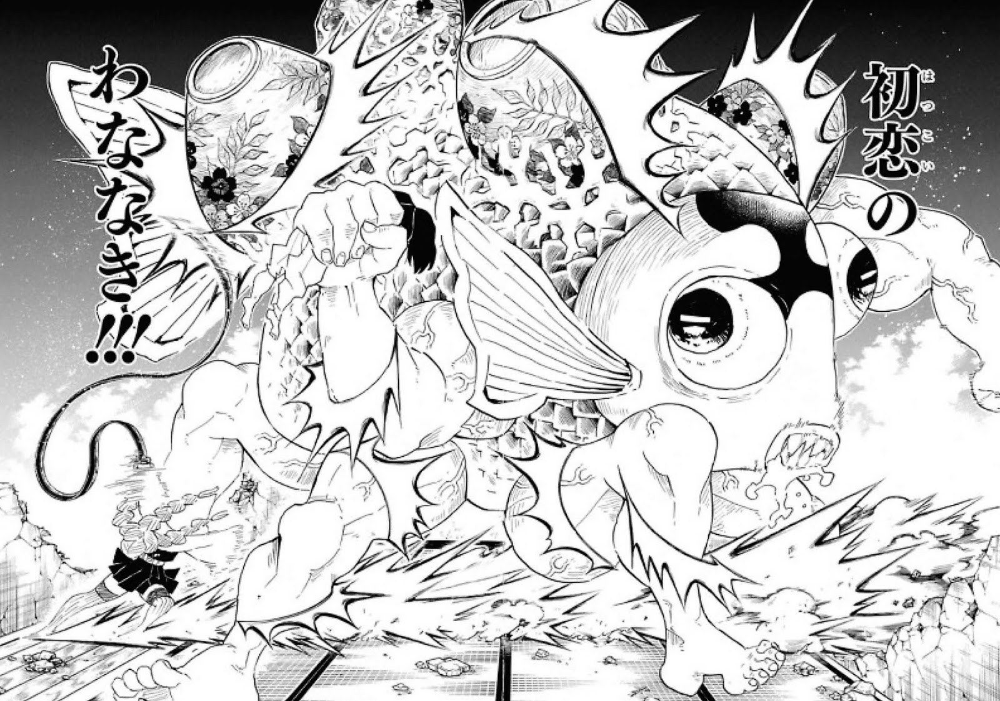
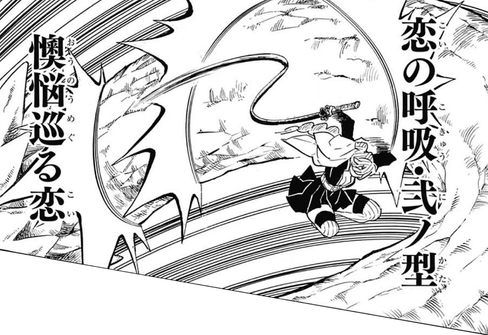
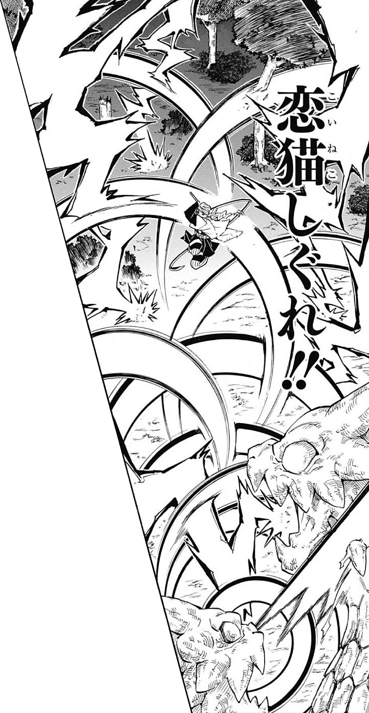
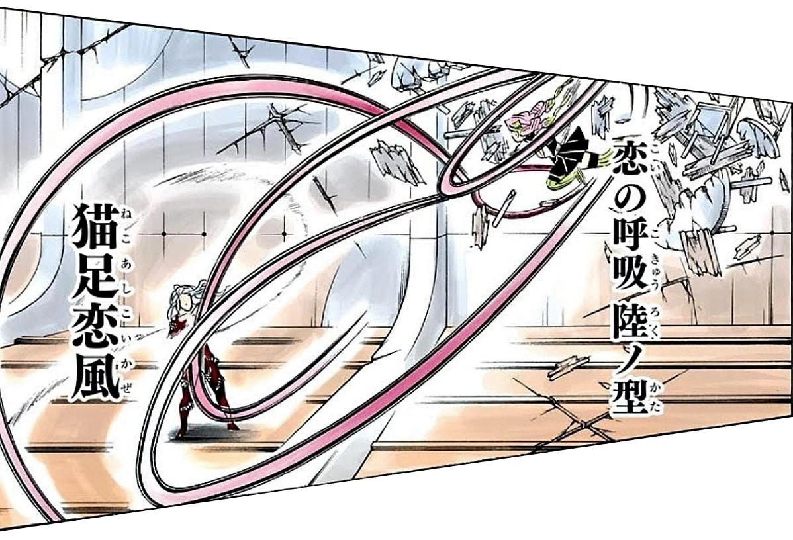

Mitsuri Kanroji
História
Mitsuri nasceu entre cinco irmãos e exibiu uma força não natural em uma idade muito jovem por meio de
sua composição muscular única, chocando até mesmo sua mãe, que era conhecida por sua força. Ela cresceu
comendo muito mais do que uma pessoa normal e desenvolveu uma cor de cabelo não natural (declarada ser o
resultado de comer muito sakura mochi ), o que a levou a ser vista como uma aberração e incapaz de
prosseguir com um casamento quando ela tinha dezessete anos.
Após essa rejeição, ela tingiu o cabelo de preto, fingiu estar fraca e se obrigou a comer uma quantidade normal na tentativa de se relacionar mais com as outras meninas, mesmo que isso prejudicasse seu bem-estar. Pouco depois de fazer esses ajustes em sua aparência física, Mitsuri foi abordada por um parceiro em potencial. No entanto, ela ficou em dúvida se fingir ser uma pessoa diferente iria realmente funcionar para ela no final.
Em algum momento, seu parceiro a deixou ou ela o deixou. Mitsuri então encontrou Kagaya Ubuyashiki, que disse a ela para rejeitar a normalidade e abraçar quem ela era, já que sua força era um presente. Por causa desse encontro, ela se juntou aos Demon Slayers e usou sua habilidade e força ridícula para subir ao status de Hashira.
Enquanto estava no Corpo, ela também adotou a ideia de encontrar um homem mais forte do que ela para se casar, no entanto, isso não deu certo porque, com exceção de seus companheiros Hashira, ela era muito mais forte e habilidosa do que o resto dos homens. Ela começou a trabalhar com Kyojuro Rengoku e, em uma batalha, ela desenvolveu sua própria respiração, a Respiração do Amor.
Após essa rejeição, ela tingiu o cabelo de preto, fingiu estar fraca e se obrigou a comer uma quantidade normal na tentativa de se relacionar mais com as outras meninas, mesmo que isso prejudicasse seu bem-estar. Pouco depois de fazer esses ajustes em sua aparência física, Mitsuri foi abordada por um parceiro em potencial. No entanto, ela ficou em dúvida se fingir ser uma pessoa diferente iria realmente funcionar para ela no final.
Em algum momento, seu parceiro a deixou ou ela o deixou. Mitsuri então encontrou Kagaya Ubuyashiki, que disse a ela para rejeitar a normalidade e abraçar quem ela era, já que sua força era um presente. Por causa desse encontro, ela se juntou aos Demon Slayers e usou sua habilidade e força ridícula para subir ao status de Hashira.
Enquanto estava no Corpo, ela também adotou a ideia de encontrar um homem mais forte do que ela para se casar, no entanto, isso não deu certo porque, com exceção de seus companheiros Hashira, ela era muito mais forte e habilidosa do que o resto dos homens. Ela começou a trabalhar com Kyojuro Rengoku e, em uma batalha, ela desenvolveu sua própria respiração, a Respiração do Amor.
habilidades
Mitsuri é uma espadachim muito poderosa. Diz-se que ela concluiu a Seleção Final em apenas seis meses de treinamento, o que Kyojuro considera excelente. Mitsuri utiliza um estilo de combate baseado no “amor”.
Respiração do Amor
A Respiração do Som é uma das formas de ataque em Kimetsu no Yaiba - Demon Slayer. Usada pelo hashira
Tengen Uzui, ela só pode ser usada por dele devido ao tipo especial de Lâminas Nichirin que ele possui,
que são mais largas do que o normal.
Esta respiração é derivada da respiração do Trovão, que por sua vez é derivada da respiração do Sol.
No post de hoje, nós trazemos todas as formas desta respiração, assim como a descrição dos ataques dela.
Esta respiração é derivada da respiração do Trovão, que por sua vez é derivada da respiração do Sol.
No post de hoje, nós trazemos todas as formas desta respiração, assim como a descrição dos ataques dela.
Primeira Forma – Calafrios do Primeiro Amor ( Ichi no kata: Hatsukoi no Wananaki)

Mitsuri avança em direção ao seu adversário com uma série de cortes de chicote para atingir
o alvo dela.
Segunda Forma – Angústia Induzindo amor ( Ni no kata: Ōnō Meguru)

Mitsuri dispara uma série de poderosos cortes usando o chicote dela.
Terceira Forma – Chuva de Gatinhos Amáveis ( San no kata: Koi Neko S)

Mitsuri salta em direção ao adversário e usa uma série de ataques longos em rápida sucessão.
Quinta Forma – Ligação Ondulante – Unhas Confusas ( Go no kata: Yurameku Renjō Mid)

Mitsuri dá um salto mortal para trás criando uma série de ataques com o chicote dela, antes
de enrolar a espada em torno do pescoço do seu adversário.
Sexta Forma – Ventos do Amor com Patas de Gato (Roku no kata: Neko Ashi K)

Mitsuri rodopia para cima e para baixo, criando uma série de ataques cortantes antes de
retroceder e começar novamente.